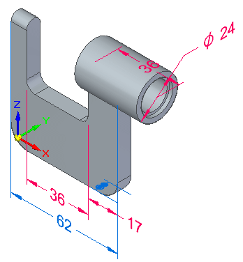

Solid Edge Part Modeling Workflow Overview (ordered)

You model parts in Solid Edge using the following basic workflow:
-
Draw a sketch for the first feature.
-
Add dimensions to the sketch.
-
Extrude or revolve the sketch into a solid feature.
-
Add more features.
-
Edit the model dimensions and solid geometry to complete the part.
Solid Edge is made up of modeling environments. These environments are tailored for creating individual parts, sheet metal parts, assemblies, and detailed drawings.
In the Solid Edge Part environment, you will construct a base feature and then modify that base feature with additional features such as protrusions, cutouts, and holes to construct a finished solid model.